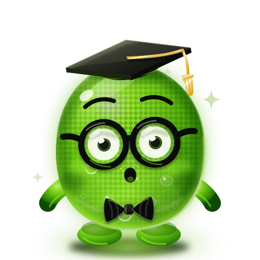
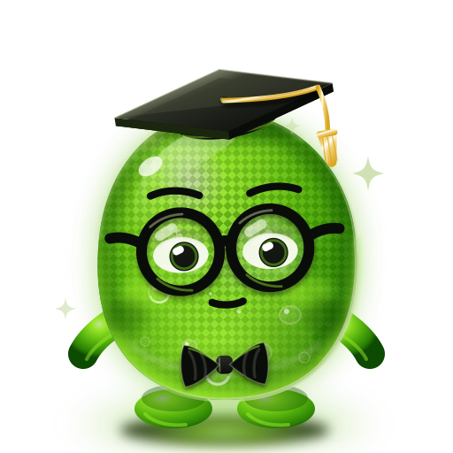
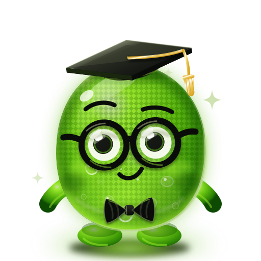
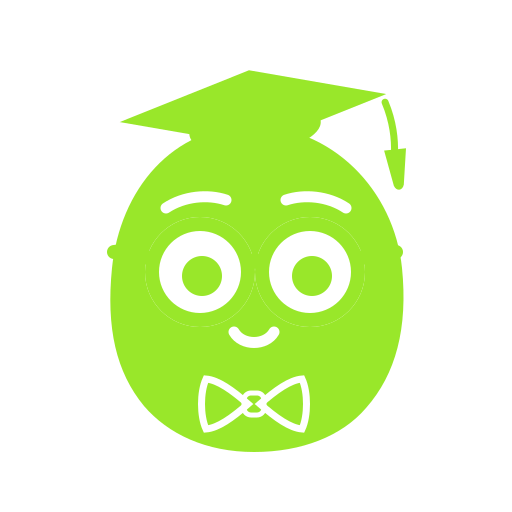
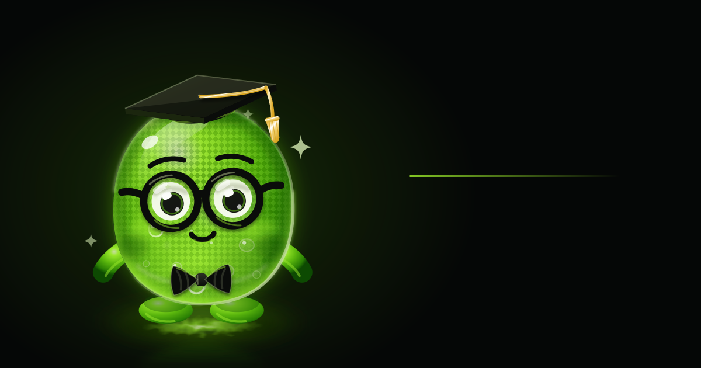

full — герой-кадър, ореол, мехурчета
medium — без филтри, за печат/векторизацияicon — плътни цветове, дебели рамки
Витрина на пакета mascot/. Всичко тук са същите файлове, които продуктите ползват —
страницата не е отделно копие. Виж README.md за вграждане в Next/React и в EJS/статичен сайт.
full — герой-кадър, ореол, мехурчета
medium — без филтри, за печат/векторизацияicon — плътни цветове, дебели рамкиfeSpecularLighting върху размита алфа). Това е разликата между зелено кръгче и материал.
Маскотът не е една картинка, а система: изражението сменя само веждите, очите и
устата — тяло, очила, шапка и папийонка остават идентични (правило от дизайн-брифа, гейтнато).
Всяко изражение е един модул в faces/; готовите асети в svg/expressions/
и <JellyMascot expression="…"> се генерират от него.
neutralhappywink
surprised
focused
proudcelebrateПозата сменя само групата на ръцете (poses/) — същият механизъм, същите гаранции.
restwave — за поздрав/онбординг<JellyMascot expression="celebrate" pose="wave" size={220} animated />
Зениците са отделна група във всяко изражение. Анимираният кадър долу се
оглежда сам (две кратки поглеждания на всеки ~11 s), а в React
gaze="follow" кара погледа да следи курсора — без нито един ререндер, само две CSS
променливи. При prefers-reduced-motion и двете са нула.
<JellyMascot gaze="follow" expression="focused" />
Не е „същото, но сиво": лицето е изрязано от плътния силует, затова знакът работи
там, където има само едно мастило — печат, гравюра, шев, воден знак, монохромна тема. Цветът идва
от currentColor, тоест от color на родителя (иска вграден SVG).

Първият кадър е обикновен <img> — файлът носи видим цвят по подразбиране.
Вторият и третият са CSS маска
(mask: url(jelly-mascot-mono.svg) center/contain; background: currentColor) — така
един файл приема цвета на контекста, без да го вграждаш. Вграден SVG работи също. Ако маската е
празна тук, страницата е отворена през file:// — браузърът блокира маски от друг
локален файл; вдигни я на сървър или ползвай вграден SVG.
svg/social-card.svg — генерирана от пълното ниво, не изнесена на ръка:
сменя се маскотът, сменя се и картата. Текстът нарочно липсва (заглавието е на продукта, а шрифт в
SVG не се пренася надеждно) — вдясно е оставено свободно поле.

Тестът, който решава дали иконата е добра: чете ли се като маскот, когато е висока колкото един ред текст.
Формата е една, цветът е променлива. Задай --jm-* на родителя — SVG-то не се пипа.
Работи само при вграден SVG (React компонента или <%- include %> в
EJS): през <img> външният CSS изобщо не стига до документа на картинката и се
вижда падащата стойност от var(--jm-…, #HEX) — точно затова всеки цвят носи fallback.
<JellyMascot detail="full" style={{ "--jm-neon": "#0DB6A8", "--jm-olive": "#2AE7D8" }} />
/* или на ниво секция, за вграден SVG: */
.brand-teal { --jm-neon: #0DB6A8; --jm-olive: #2AE7D8; }
✓ Пази пропорциите. Мащабирай еднакво по двете оси.
✗ Не разтягай. Силуетът е разпознаваемостта.
✗ Не пребоядисвай през CSS филтри — ползвай --jm-*.
✓ Чисто поле ≥ ⅛ от височината от всяка страна (пунктирът).
Кантът и плътните аксесоари трябва да държат силуета и когато фонът не работи за глоуто.
Полюшване, пулс на глоуто, мигане, дрейф на мехурчетата, минаващ отблясък и присветващи искри.
Долният кадър е svg/jelly-mascot-full-animated.svg — генериран от пълното ниво + блока
в tokens.css, със стиловете вътре във файла, затова се движи дори през
<img>. При вграден SVG същото се пуска с класа .jm-animated.

prefers-reduced-motion